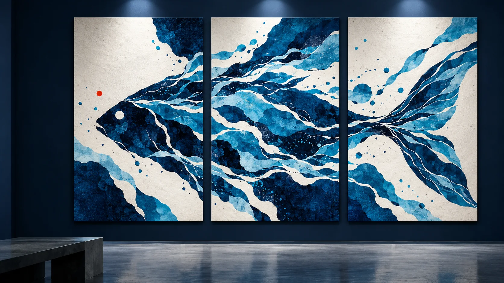

Brand · Graphic · Space · Motion
DT ALEX
Studios
平面与视觉设计师Graphic & Visual Designer
平面与
视觉设计Graphic &
Visual Design
品牌、平面、空间与部分数字设计。工作之外研究 3D、动态影像、软件与 AI。Brand, graphic, spatial and part of digital design. Outside work I study 3D, motion imagery, software and AI.

精选作品Selected Work
个人项目Personal Projects
工作之外做的一些个人项目——不墨守成规，主动拥抱与研究 AI。Things I make outside my design work — unwilling to follow convention, actively embracing and studying AI.
拖动旋转 · 三个个人项目挂在球面上Drag to rotate · the three personal projects sit on the sphere
实验Experiments
实验区是一块可以拖动和缩放的无限画布——AI 图像、Shader、字阶、材料，散落其中。The experiment area is an infinite canvas you can drag and zoom — AI imagery, shaders, type scales and materials scattered across it.
DT ALEX Studios
看到这儿了That’s the end
到这里就没有更多页面了。可以回到开头再看一遍，或者直接把话递过来。Nothing past this point. Go back to the start and walk through it again, or just send the word over.
回到开头会重新播一次入场Back to start replays the opening